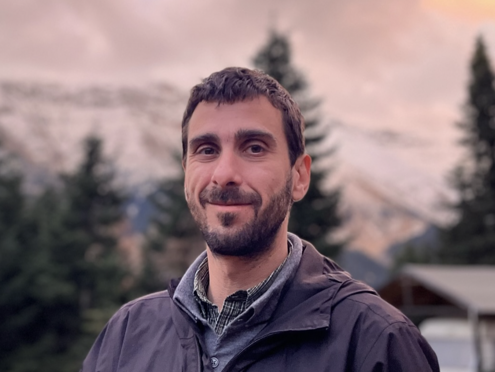

[Jul 2025] Preprint "Deep Uzawa for kinetic transport with Lagrange enforced boundaries", with Charalampos Makridakis, Aaron Pim, and Tristan Pryer, arXiv.2507.19907
[Feb 2025] Preprint "A posteriori certification for neural network approximations to PDEs", with Lewin Ernst (Ulm) and Karsten Urban (Ulm), arXiv.2502.20336
[Feb 2025] Teaching "Numerical Linear Algebra" for the spring semester at B.Sc. Mathematics, University of Crete.
[Jan 2025] Talk "Certification of neural network solutions to PDEs" (Joint work with Lewin Ernst (Ulm) and Karsten Urban (Ulm), at the BIT 65th Anniversary Conference, Uppsala University (Sweden).
© 2025 Nikolaos Rekatsinas